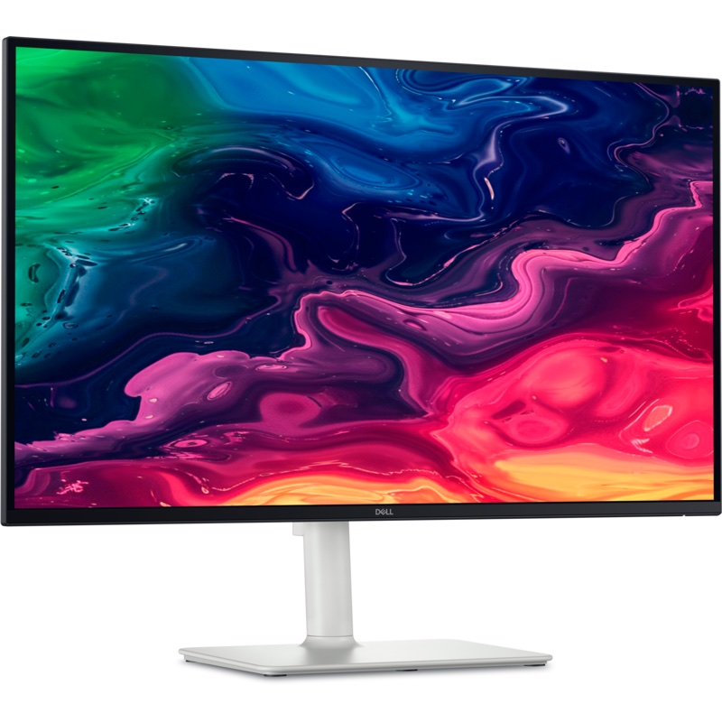

4K 120HzDell 27 Plus 4K S2725QC
27 אינץ' · 4K · 120Hz · USB-C
מסך 27 אינץ' ברזולוציית 4K עם 120Hz: טקסט חד במיוחד, צבעים מדויקים ותנועה חלקה. כבל USB-C אחד מעביר תמונה, נתונים וטעינה (65W) למחשב הנייד.
🔍
רזולוציית 4K
3840×2160
פי 4 פיקסלים ממסך Full HD: טקסט ותמונות חדים במיוחד, 163 פיקסלים לאינץ'.
🔌
כבל USB-C אחד
65W
תמונה, נתונים וטעינת הנייד בכבל אחד. מושלם גם למחשבי Mac.
- 🎞120Hz + FreeSync Premiumתנועה חלקה, גם במשחקים
- 🎨99% sRGB · 350 ניטצבעים מדויקים ומוכן ל-HDR
- 🔊רמקולים 2×5Wשמע טוב בלי רמקולים חיצוניים
- ↕️מעמד מתכוונןגובה, הטיה, סיבוב ו-Pivot
למה 4K על 27 אינץ'?
📝
עבודה משרדית
טקסט חד כמו על נייר, ויותר חלונות פתוחים במקביל.
📸
תמונות ועיצוב
99% sRGB ופי 4 פרטים לעריכת תמונות וגרפיקה.
💻
עמדה למחשב נייד
מחברים כבל USB-C אחד והנייד גם נטען.
🎮
משחקים וסרטים
120Hz עם AMD FreeSync Premium ושתי יציאות HDMI 2.1.
מפרט טכני
| גודל | 27 אינץ' |
|---|---|
| רזולוציה | 4K UHD 3840×2160 (163 PPI) |
| פאנל | IPS, ציפוי נגד השתקפויות |
| קצב רענון | 120Hz, AMD FreeSync Premium |
| זמן תגובה | 4ms (Extreme) · 5ms (Fast) |
| בהירות | 350 ניט |
| ניגודיות | 1,500:1 |
| צבעים | 99% sRGB, 1.07 מיליארד צבעים |
| USB-C | USB-C (DisplayPort 1.4 + טעינה עד 65W) · USB-C נוסף עם 15W |
|---|---|
| HDMI | 2× HDMI 2.1 (4K 120Hz) |
| USB | USB-A 5Gbps |
| שמע | 2 רמקולים 5W |
| מעמד | גובה עד 13 ס"מ · הטיה · סיבוב ±30° · Pivot |
| נוחות עיניים | ComfortView Plus (אור כחול ≤35%) |
| משקל | 4.85 ק"ג (6.71 ק"ג עם מעמד) |
| דגם | Dell 27 Plus 4K USB-C Monitor S2725QC |
המפרט לפי Dell ועשוי להשתנות. התמונות להמחשה בלבד.